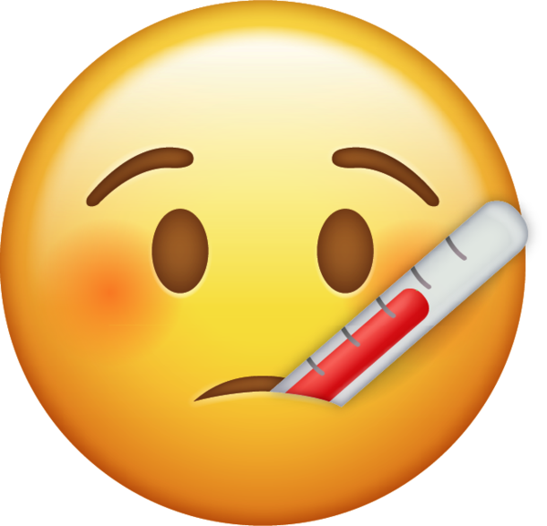
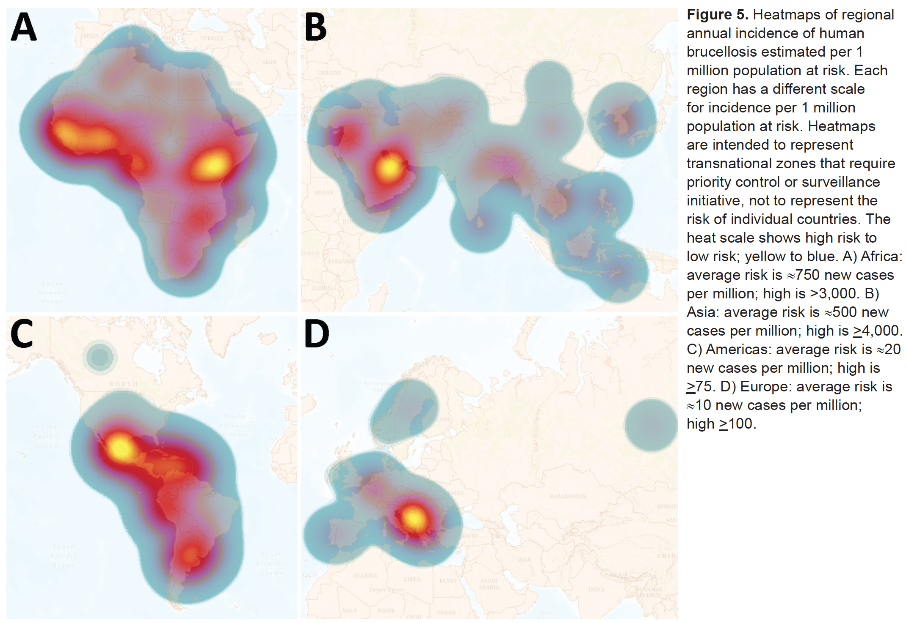
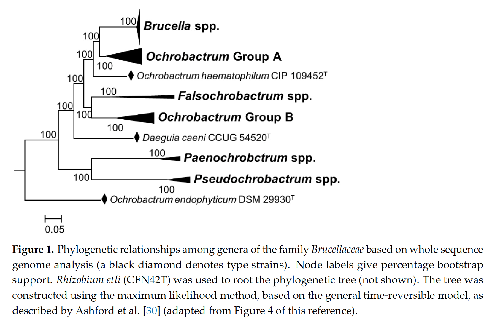
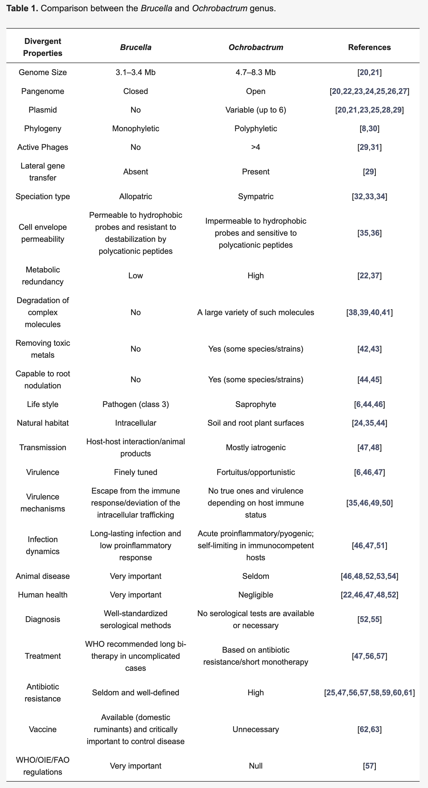

1 Introduction
1.1 Say cheese!
A few weeks ago you went to a food festival and farmer’s market, and passed a cheese stall. You love cheese and the smell was making you hungry, so you tried a few samples, and bought the one you found tastiest. It was a delicious blue cheese, made from unpasteurised cow’s milk, and with natural rennet.
You ate it on sourdough crackers, with some fig and plum chutney, and it was a savoury taste explosion. You thought to yourself what a great idea it was to go to the farmer’s market. And it was even a local producer, so you kept the food miles down and supported the local community. You felt great!
1.2 A month later

Now it’s about a month later. But you’re not feeling great at all. You haven’t felt great for a couple of days in fact, and you’ve got quite a list of signs and symptoms.
- you’ve had a fever for day or so
- you’re sweating, even though it’s cool
- you’ve got a nasty headache you can’t shift, even with paracetamol
- you’re not hungry and haven’t felt like eating at all, since this started
- you’re exhausted all the time
- all your joints ache, your muscles feel like you’ve wrestled an elephant seal, and don’t get you started about your back
But you were out at the weekend, and caned it a bit. Maybe it’s just a really bad hangover?
It’s all very nonspecific. It’s not ’flu season but even though there’s no ’flu going round it feels like the worst ’flu of your life and worse than any hangover you’ve had so far. So you called 111 and off you popped to the pharmacist like they said, who immmediately suggested you go to your GP, who referred you without delay to Accident and Emergency with suspected bacteremia.
1.3 In the blood

You’re in a hospital room now, full of antibiotics and feeling terrible. Your bloods have been taken - so many bloods! - and you’ve been told that the phlebotomists have found an unexpected bacterium. They’re trying to grow it up in agar right now. As you’re a microbiologist you’re naturally curious, and you ask if they’ve identified it yet.
It turns out they’ve been having difficulty finding a medium that the bacteria will grow on. They’re trying blood and tryptose broth and, while that’s meeting with some success, it’s very, very slow-growing.
They’ve managed to get a preliminary identification from a small sample by MALDI-TOF, (Barth et al. (2023)) which suggests that it’s a Brucella strain of some sort.
Your heart sinks. You really, really do not want brucellosis.
Although uncommon the UK, brucellosis is endemic in many developing countries (Laine et al. (2023)). The causative agents, Brucella spp. bacteria, grow less quickly in the open environment than in their hosts, and are highly contagious intracellular pathogens readily spread between individuals and by infectious body fluids (Moreno et al. (2023)).

In humans brucellosis is not ofen fatal, but it can be severely disabling. Brucellosis presents in both infectious and non-infectious forms and can be highly persistent, causing chronic debilitation and granulomas within organs. The most common presentations involve greatly enlarged liver and spleen, but other complications - including neurological - may be seen (Franco et al. (2007)). The presentation can be extremely variable, to the extent that “in endemic areas, everything can be due to brucellosis until proven different” (Bosilkovski, Keramat, and Arapović (2021)).
Blood and bone marrow culture remains the gold standard for diagnosis of brucellosis, but Brucella spp. grow slowly, and it’s not unusual for a culture to take a week or more to reach a size suitable for diagnosis. ELISA is popular but less specific than than many other diagnostic tests. Molecular methods such as PCR and MALDI-TOF have not been as widely validated (Franco et al. (2007)).
Treatment of brucellosis is unpleasant for the patient, and has hardly changed this century. Treatment requires simultaneous administration of multiple antibiotics for an extended period (e.g. 200mg doxycycline plus 900mg rifampicin, and perhaps a fluoroquinoline in support, for 6-8 weeks). Relapse rates are high (up to 25%) with oral delivery alone but lower with parenteral delivery (up to about 8%) (Franco et al. (2007), Bosilkovski, Keramat, and Arapović (2021)).
Hospital staff potentially exposed to the infectious agent undergo the same treatment as prophylaxis.
At the lab they’ve managed to sequence the bacterium that’s in your blood, using an Oxford Nanopore flongle they had lying around. The assembled draft genome has come back, but the NHS is chronically underfunded and the staff are massively overworked, so your consultant hasn’t had time to learn how to classify bacteria from genome sequence data.
“I’ll have a go, if you like,” you say. Then the light starts to hurt and you have a nap.
1.4 Controversy

As an expert biomedical microbiologist, you know that there has recently been a lot of controversy around identification of Brucella, and that preliminary molecular and genomic identifications of Brucella spp. shouldn’t necessarily be taken at face value.
You are aware that recent publications in microbial nomenclature renamed a whole genus of much less worrying bacteria, belonging to the Ochrobactrum genus, to Brucella (Hördt et al. (2020)), even though Ochrobactrum spp. are only opportunistic pathogens and not particularly virulent (Hagiya et al. (2013)). Many microbiologists who work in clinical settings, or with Brucella, object to the renaming (Moreno et al. (2022), Moreno et al. (2023)). Even so, some commercial diagnostic equipment has updated its databases and now calls bacteria Brucella that used to be called as Ochrobactrum.
In 2020, a manuscript was published applying a bioinformatics methodology to over 1,000 genomes of Alphaproteobacteria type strains. Alphaproteobacteria is the taxonomic Class that contains both Brucella and Ochrobactrum genera (Hördt et al. (2020)).
In phylogenetic trees, Brucella and Ochrobactrum are closely-related. Ochrobactrum form a group called a clade (they share a single common ancestor), but Brucella appears as a coherent subgroup with multiple derived characters within this clade.
The bioinformatics method applied in Hördt et al. (2020) reproduced this relationship, and a proposal was made that, because Brucella was nested within Ochrobactrum, the entire group of bacteria - including all Ochrobactrum - should be named Brucella. It was argued in this paper that, even though Brucella and Ochrobactrum are not as virulent as each other, they should be considered to belong to different “risk groups,” but also to be fundamentally similar organisms (Hördt et al. (2020)).
Clinical microbiologists and other scientists rejected this proposal, arguing that the names of bacteria do more than indicate where they lie in a phylogenetic tree. They argue that the long-standing use of brucellosis to refer to the serious disease caused only by Brucella ends up being confused - potentially dangerously - if relatively low-risk bacteria such as Ochrobactrum are renamed as Brucella. They also argue that “typology,” taking into consideration more than phylogenetic placement, is necessary for meaningful naming and subdivision of bacteria, and that bioinformatics methods alone are not sufficient to define bacterial taxa. They consider that Brucella and Ochrobactrum strains show quite different phenotypes, and should therefore remain known by different names (Moreno et al. (2022), Moreno et al. (2023)).

Since the nomenclature change, there have been instances of bacteria formerly known as Ochrobactrum being identified as Brucella by commercial MALDI-TOF instruments in a clinical context, leading to avoidable prophylactic treatment of hospital staff (Moreno et al. (2023)).
Now that the name Brucella has been validly published in the literature for bacteria formerly known as Ochrobactrum, and is considered the “correct” name for the group, it is highly unlikely it would be withdrawn, under the the rules of the International Code of Nomenclature of Prokaryotes (ICNP, the Prokaryotic Code). The controversy continues.
You know that if you make a positive identification of this bacterium as something other than Brucella, you might avoid eight weeks of unpleasant multiple antibiotic treatment, and so can staff who were potentially exposed to Brucella through your sample. If this infection does turn out to be Brucella they would also need to undergo prophylactic treatment.
Your identification could save a lot of people - not least you! - quite a bit of unpleasantness.
1.5 Your challenge
You will be provided with the assembled draft genome sequence of the organism that was isolated from your blood and sequenced on the flongle and, for convenience, some additional information (e.g. 16S sequence data) that may help with identification.
In the sections that follow, you will be guided through identification of the organism using a number of different bioinformatics approaches and online resources. Once you have conducted these analyses and identified your organism, you should complete the formative questions on MyPlace. These will ask you about your identification, and your reasons for making that identification.
Begin your analysis by clicking on the link to Data (here, or below)